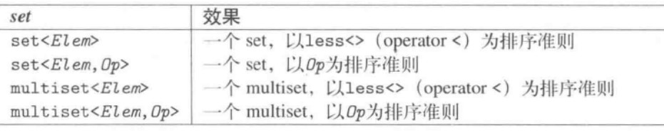

总说：
8个关联容器体现在三个维度上：
- 或者是map，或者是set；
- 或者要求不重复的关键字，或者允许重复，允许重复的前加multi
- 顺序或无序保存，无序的前加unordered
set：#include<set>——主要应用场合？
特点：
- set和multiset通常以平衡二叉树完成（实际以红黑树完成），multiset允许元素重复而set不允许重复
- 自动排序
- 优点：令二叉树于查找元素时拥有良好效能，其查找函数具有对数复杂度(怎样算出来的？)
- 缺点：造成set和multiset的一个重要限制，不能直接改变元素值，因为这样会打乱原本正确的顺序，因此要改变元素值必须先删除旧元素，再插入新元素，以下接口反映了这种情况：
- set和multiset不提供任何操作函数可以直接访问元素
- 通过迭代器进行元素间接访问，有一个限制：从迭代器的角度看，元素值是常量——？
set有以下形式：

操作函数：
- 创建/复制/销毁：
- 两种方式定义排序准则：
- 以template参数定义之
- 以构造函数参数定义之
- 非更易性操作：
- c.key_comp()：返回比较准则——返回一个函数对象？
- c.value_comp():返回针对value的比较准则
- c.empty()：返回是否容器为空
- c.size()：返回当前元素个数
- c.max_size():返回元素个数之最大可能量——？返回了一个很大的数
- 比较操作：==, !=, <, >, <=, >=
- 特殊查找函数：set和multiset再元素快速查找方面有优化设计，所以应优先采取以下而非stl算法，因为以下是对数复杂度，而stl算法是线性复杂度：
- c.count(val)：返回元素值为val的元素个数；对于set来说元素是不重复的，所有最大为1
- c.find(val):返回元素值为val的第一个元素的迭代器，如果找不到就返回end()
- c.lower_bound(val):返回val的第一个可安插位置，也就是元素值>=val的第一个元素位置——未验证
- c.upper_bound(val):
- c.equal_range(val)
- 赋值：
- c = c2/c = rv/c = initlist：将c2的全部元素赋值给c/将右值rv的所有元素以移动的方式给c/将初值列initlist的所有元素赋值给c
- c1.swap(c2)/swap(c1,c2):置换c1和c2的数据
- 迭代器操作：双向迭代器，不支持随机访问的stl算法；更重要的是从迭代器的角度看，所有元素都被视为常量，这可确保元素不会被改动以至于打乱既有顺序(什么意思？)
- 元素的添加与删除：
- c.insert(val)：安插一个val，返回一个pair，第一个元素是新元素迭代器，第二个是bool值表示是否插入成功，如果不成功返回的pair的second是false。——以下未验证
- c.insert(pos, val):安插一个val拷贝，返回新元素位置
- c.insert(begin, end):将区间[begin,end)内所有元素的拷贝安插到c
- c.insert(initlist)：安插初始值列表initlist内的所有元素的一份拷贝
- c.emplace(args...)：安插一个以args为初值的元素，并返回新元素的位置
- c.erase(val)：删除与val相等的所有元素，返回被移除的元素的个数
- c.erase(pos)：移除iterator位置pos上的元素，无返回值
- c.erase(beg,end)：移除[beg, end)上的所有元素
- c.clear():移除所有元素，将容器清空
- 用以安插元素的函数：insert()和emplace()，返回类型不尽相同set返回以pair组织起来的两个值：
- pair结构中的second成员表示安插是否成功
- pair结构中的first成员表示新元素的位置，或现存的同值元素的位置
运行期指定排序准则：
map：#include<map>
特点：
- map和multimap：元素类型是pair(key/value组成)，可根据key的排序准则自动为元素排序，multimap不允许元素重复，map允许元素重复。
- map/multimap通常是以平衡二叉树完成，但C++标准并未规定
- map和multimap会根据元素的key自动对元素排序，默认以less做比较，所以根据已知的key查找某个元素时有很好的效率，而根据已知value查找元素时效率就很差；自动排序这一性质使得map和multimap有一条重要限制：不可以直接改变元素的key，因为这会破坏正确次序。要修改元素的key，必须先移除该key的元素，然后插入新的key/value；从迭代器的观点看，元素的key是常量
- key和value必须满足：
- key和value必须是可复制或可移动的
- 对指定的排序准则而言，key必须是可比较的
map可为以下形式：

操作函数：
- 创建/复制/销毁：
- 两种方式定义排序准则：
- 以template实参定义之
- 以构造函数参数定义之
- 类型别名：
- key_type：关键字类型
- mapped_type：每个关键字关联的类型，只适用于map
- value_type：对于set，与key_type相同；多于map，为pair<const key_type, mapped_type>
- 非更易性操作：
- c.key_comp():返回比较准则——返回的是一个函数对象？
- c.value_comp():返回针对value的比较准则——同问
- c.empty():返回是否容器为空
- c.size():返回目前的元素个数
- c.max_size()：返回元素个数之最大可能量——一个很大的数
- 比较操作：==/!=/</>/<=/>=：比较的是什么？
- 特殊查找：和set一样，推荐使用以下而非stl算法
- c.count(val)：返回key为val的元素个数——map返回最多一个吧
- c.find(val):返回第一个key为val的第一个元素的迭代器，找不到就返回end()；不能以find查找拥有某个特定value的元素，必须使用stl算法find_if或自实现
- c.lower_bound(val)——未验证
- c.upper_bound(val)
- c.equal_range(val)
- 赋值：
- c=c2/c=rv/c=initlist:将c2的全部元素赋值给c/将右值rv的所有元素以移动的方式给予c/将初始值initlist的所有元素给c
- c1.swap(c2)/swap(c1, c2):置换c1和c2的数据
- 插入删除操作：
- c.insert(val):安插一个val的拷贝，返回pair，第一个元素为插入元素的迭代器，第二个为bool值表示是否插入成功
- c.insert(pos,val)
- c.insert(beg,end)
- c.insert(initlist)
- c.emplace(args...)
- c.emplace_hint(pos, args...)
- c.erase(val)
- c.erase(pos)
- c.erase(beg,end)
- c.clear()
// 有三种不同的方式通过insert将value传入map或multimap内
std::map<int, string> map;
// 运用value_type:
map.insert(std::map<int, string>::value_type(2, "hello"));
// 运用pair<>:
map.insert(std::pair<int, string>(5, "good"));
// 运用make_pair()
map.insert(std::make_pair<int, string>(8, "make"));
- 另外map提供operator[]和at()，作为便捷的元素安插和设定操作
- at操作如果不存在这样的元素会抛出out_of_range异常，否则返回一个引用指向带着key的元素
- operator[]:如果存在key，会返回元素的引用——？；如果不存在则会自动安插一个新元素，返回
无序容器：都是以哈希表为基础实现，#include<unordered_set>/#include<unordered_map>
unordered容器的几乎所有操作-包括拷贝构造和赋值，元素的安插和寻找，以及等价比较的预期行为都是取决于哈希函数的质量
unordered_map：只要满足两个条件：
- key和value都必须可被复制或可被移动
- key必须可被等价准则拿来比较
和其他容器比较后的缺点：
- 不提供operator<, operator>,<=,>=,然而提供了==，!=（原因？）
- 不提供lower_bound和upper_bound
- 由于迭代器只保证至少是个前向迭代器，因此反向迭代器包括rbegin(), rend(), crbegin(), crend()都不提供
操作：
- 创建和控制unordered容器

- 布局操作：
- c.hash_function()：返回hash函数
- c.key_eq()：返回"相等性判断式"
- c.bucket_count()：返回当前的bucket个数
- c.max_bucket_count()：返回bucket最大可能数量
- c.load_factor()：返回当前的负载数
- c.max_laod_factor()/c.max_laod_factor(val)：返回当前的最大负载系数/设定当前最大负载系数为val
- c.rehash(bnum)：将容器rehash，使其bucket个数至少为bnum
- c.reserve(num)：将容器reshah，使其空间至少拥有num个元素
- 非更易性操作：
- c.empty()：容器是否为空
- c.size()：返回目前的元素个数
- c.max_size()：返回元素个数之最大可能
- c1 == c2/c1 != c2：判断c1是否等于/不等于c2。unorder容器只提供==和!=，在最坏的情况下有可能提供二次复杂度?
- 特殊的查找操作：
- c.count(val)：返回元素值为val的元素个数
- c.find(val):返回元素值为val的第一个元素，如果找不到就返回val
- c.equal_range(val):返回val可被安插的第一个位置和最后一个位置，也就是元素值==val的元素区间
- 赋值操作：
- c=c2/c=rv/c=initlist：将c2的值给c/将右值rv的值转移给c/将初始值initlist的所有元素给c
- c1.swap(c2)/swap(c1,c2)：置换c1和c2的数据
- 安插和删除元素：
- insert(val)
- insert(pos, val)
- ...
- c.erase(val)
- c.erase(pos)
- c.erase(begin, end)
- c.clear()
- 下标操作：
- c[key]：如果不存在，安插一个带key的元素；如果存在，返回一个引用指向key对应的值
- c.at(key)：返回key值的引用；如果元素不存在抛出out_of_range异常
bucket接口：可通过一个特定的bucket接口访问个别bucket，用以暴露整个hash表的内部状态
- c.bucket_count()
- c.bucket(val)
- c.bucket_size(buckidx)
- c.begin()/c.end()/c.cbegin()/c.cend()
哈希：
1.哈希函数的好坏取决于其避免冲突发生的能力
疑问/注意点：
1.set中的元素是const，map中元素是pair，其第一个成员是const的？
通常不对关联容器使用泛型算法；
- key_type：容器类型的关键字类型
- mapped_type：每个关键字关联的类型，只适用于map
- value_type：对于set，与key_type相同；对于map，为pair<const key_type,mapped_type> （不能改变一个元素的关键字，因此这些pair的关键字部分是const的）
问题：
- 字典必须通过关键字查询其元素？map只能通过迭代的方式访问其元素
- 为何map和set的插入删除效率比其他序列容器高？因为不需要内存拷贝和内存移动
- 为何map和set每次Insert之后，以前保存的iterator不会失效？因为插入操作只是结点指针换来换去，结点内存没有改变。而iterator就像指向结点的指针，内存没变，指向内存的指针也不会变。
- 当数据元素增多时（从10000到20000），map的set的查找速度会怎样变化？RB-TREE用二分查找法，时间复杂度为logn，所以从10000增到20000时，查找次数从log10000=14次到log20000=15次，多了1次而已。
- map是怎么实现的？查找的复杂度是多少？能不能边遍历边插入？红黑树和散列
源码剖析：关联容器没有所谓的头尾，只有最大元素和最小元素，所以不会有push_back，begin()之类的操作一般情况下关联容器内部结构是一个平衡二叉树，最广泛使用的是红黑树